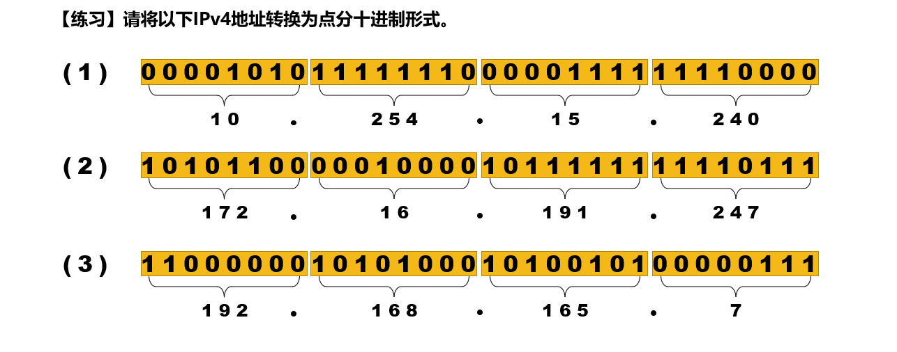
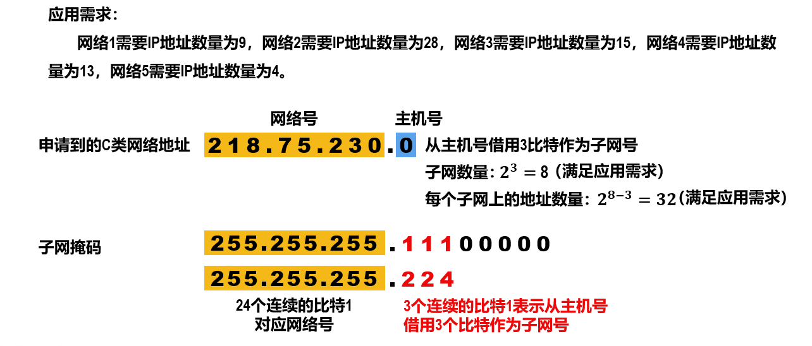
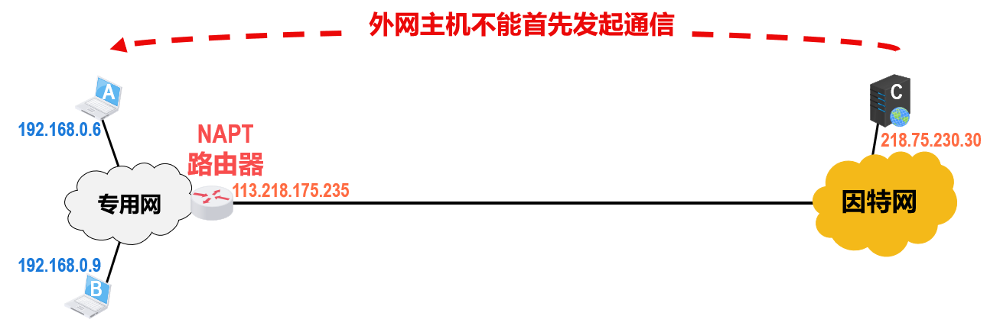
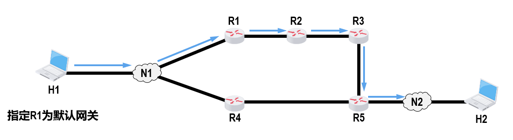
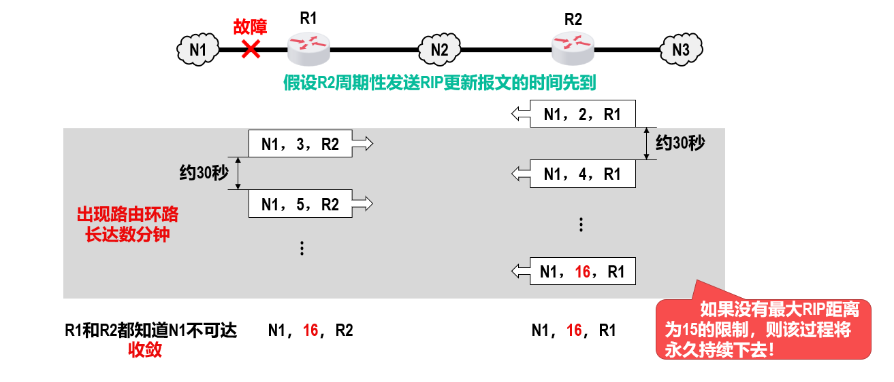

网络层概述
网络层的主要目的在任意结点间进行数据报不可靠传输。
网络层的主要任务就是将分组从源主机经过多个网络和多段链路传输到目的主机，可以将该任务划分为分组转发和路由选择两种重要的功能。
冲突域
冲突域是指能产生冲突的所有设备的集合，这些结点之间存在介质争用的现象。
在 OSI 参考模型中，冲突域被视为第 1 层的概念，像集线器、中继器等简单无脑复制转发信号的第 1 层设备所连接的结点都属于同一个冲突域，也就是说它们不能划分冲突域。而第 2 层（网桥、交换机）、第 3 层（路由器）设备都可以划分冲突域。
Tip
“域”表示冲突或广播在其中发生并传播的区域。
广播域
广播域是指接收同样广播消息的结点集合。也就是说，在该集合中的任何一个结点发送一个广播帧，其他能收到这个帧的结点都被认为是该广播域的一部分。
在 OSI 参考模型中，广播域被视为第 2 层的概念，像第 1 层（集线器等）、第 2 层（交换机等）设备所连接的结点都属于同一个广播域。而路由器，作为第 3 层设备，则可以划分广播域，即可以连接不同的广播域。
通常所说的局域网(LAN)特指使用路由器分割的网络，也就是广播域。
路由与转发
路由器主要完成两个功能：
-
路由选择（确定哪一条路径）
根据路由协议构造路由表，同时经常或定期地与相邻路由器交换信息，获取网络最新拓扑，动态更新维护路由表，以决定分组到达目的地结点的最优路径。
虽然一些路由协议也将延迟等作为参数进行路由选择，但路由协议使用得最多的参数是传输距离，此外还有一些其他参数。
-
分组转发（当一个分组到达时所采取的动作）
指路由器根据转发表将分组从合适的端口转发出去，关键操作是转发表查询、转发及相关的队列管理和任务调度等。
路由器只能根据 IP 进行转发。
路由表是根据路由选择算法得出的，而转发表是从路由表得出的。转发表的结构应当使查找过程最优化，路由表则需要最优化网络拓扑变化的计算。
路由表通常包含目的网络和到达该目的网络路径上的下一个路由器的 IP 地址。
路由器转发一个分组的过程如下：先接收整个分组，然后对分组进行错误检查，若出错，则丢弃错误的分组；否则存储该正确的分组。最后根据路由选择协议，将正确的分组转发到合适的端口，这种机制称为存储转发机制。
在讨论路由选择的原理时，往往不区分转发表和路由表，而笼统地使用路由表一词。
路由器
路由器主要实现物理层、数据链路层、网络层的功能。
路由器是一种具有多个输入/输出端口的专用计算机，其任务是连接不同的网络（连接异构网络）并完成分组转发。在多个逻辑网络（即多个广播域）互连时必须使用路由器。
路由器是第三层设备，向传输层及以上层次隐藏下层的具体实现，所以在路由器互连的多个局域网的结构中，每个局域网的物理层、数据链路层、网络层协议可以不同。而网络层之上的协议数据是路由器所不能处理的，因此网络层以上的高层协议必须相同。
路由器是第三层设备，要处理的内容比第二层设备交换机更多，因而转发速度比交换机慢。
通常的路由器可以支持多种网络层协议，并提供不同协议之间的分组转发。例如使用特定的路由器连接 IPv4 与 IPv6 网络，就是典型的网络层协议不同而实现互连的例子。
路由器工作在网络层，不转发广播包（目的地址为 255.255.255.255 的 IP 包），因此能够分隔广播域，抑制网络风暴。
当源主机向目标主机发送数据报时，路由器先检查源主机与目标主机是否连接在同一个网络上。
- 若源主机和目标主机在同一个网络上，则直接交付而无须通过路由器。
- 若源主机和目标主机不在同一个网络上，则路由器按照转发表（由路由表得出）指出的路由将分组转发给下一个路由器，这称为间接交付。
可见，在同一个网络中传递数据无须路由器的参与，而跨网络通信必须通过路由器进行转发。
从结构上看，路由器由路由选择和分组转发两部分构成。
从模型的角度看，路由器是网络层设备，它实现了网络模型的下三层，即物理层、数据链路层和网络层。
Tip
若一个存储转发设备实现了某个层次的功能，则它可以互连两个在该层次上使用不同协议的网段（网络）。若网桥实现了物理层和数据链路层，则网桥可以互连两个物理层和数据链路层不同的网段；但中继器实现了物理层后，却不能互连两个物理层不同的网段，这是因为中继器不是存储转发设备，它属于直通式设备。
转发表是从路由表得出的，其表项和路由表项有直接的对应关系。但转发表的格式和路由表的格式不同，其结构应使查找过程最优化，而路由表则需对网络拓扑变化的计算最优化。
转发表中含有一个分组将要发往的目的地址，以及分组的下一跳（即下一步接收者的目的地址，实际为 MAC 地址）。为了减少转发表的重复项目，可以使用一个默认路由代替所有具有相同“下一跳”的项目，并将默认路由设置得比其他项目的优先级低。
路由表总是用软件来实现的；转发表可以用软件和特殊的硬件来实现。
注意转发和路由选择的区别：
- “转发”是路由器根据转发表把收到的 IP 数据报从合适的端口转发出去，它仅涉及一个路由器。
- “路由选择”则涉及很多路由器，路由表是许多路由器协同工作的结果。这些路由器按照复杂的路由算法，根据从各相邻路由器得到的关于网络拓扑的变化情况，动态地改变所选择的路由，并由此构造出整个路由表。
路由表不等于转发表，分组的实际转发是靠直接查找转发表，而不是查找路由表。
网络层的服务
分组交换网根据其通信子网向端点系统提供的服务，还可进一步分为面向连接的虚电路服务和无连接的数据报服务。这两种服务方式都是由网络层提供的。
-
OSI 参考模型曾主张在网络层使用面向连接的虚电路服务，认为应由网络自身来保证通信的可靠性。
虚电路是面向连接的，它提供的是可靠的服务，能保证数据的可靠性和有序性，但是一旦虚电路中的某个结点出现故障，就必须重新建立一条虚电路。
对于出错率高的传输系统，易出现结点故障，因此采用数据报方式更合适。
-
TCP/IP 体系的网络层提供的是无连接的数据报服务，其核心思想是应由用户主机来保证通信的可靠性。
数据报是无连接的，它提供的是不可靠的服务，分组有可能丢失、失序，也不保证到达的时间，传输既不保证可靠性，又不保证分组的按序到达。
分组交换-虚电路
在虚电路方式中，当两台计算机进行通信时，应当先建立网络层的连接，也就是建立一条逻辑上的虚电路(Virtual Circuit, VC)，连接一旦建立，就固定了虚电路对应的物理路径。
Tip
虚电路提供的服务包括：
- 永久性虚电路（PVC）：提前定义好的、基本上不需要任何建立时间的端点之间的连接。
- 交换型虚电路（SVC）：端点之间的一种临时性连接，这些连接只持续所需的时间，且在会话结束时就取消这种连接。
每次建立虚电路时，将一个未用过的虚电路号(VCID)分配给该虚电路，以区别于本系统中的其他虚电路，然后双方就沿着已建立的虚电路传送分组。
分组的首部仅在连接建立时使用完整的目的地址，之后每个分组的首部只需携带这条虚电路的编号即可。
在虚电路网络中的每个结点上都维持一张虚电路表，表中每项记录一个打开的虚电路的信息，包括在接收链路和发送链路上的虚电路号、前一结点和下一结点的标识，它是在虚电路建立过程中确定的。
与电路交换类似，整个通信过程分为三个阶段：
-
虚电路建立
数据传输前，主机 A 与主机 B 先建立连接，主机 A 发出“呼叫请求”分组，该分组通过中间结点送往主机 B，若主机 B 同意连接，则发送“呼叫应答”分组予以确认。
-
数据传输
虚电路建立后，主机 A 和主机 B 就可相互传送数据分组。
-
虚电路释放
传送结束后，主机 A 通过发送“释放请求”分组来拆除虚电路，逐段断开整个连接。
虚电路服务具有如下特点：
- 虚电路通信链路的建立和拆除需要时间开销，对交互式应用和少量的短分组情况显得很浪费，但对长时间、频繁的数据交换效率较高。
- 虚电路的路由选择体现在连接建立阶段，连接建立后，就确定了传输路径。
- 虚电路提供了可靠的通信功能，本身就可实现差错控制，不需要依赖其他协议实现差错控制;能保证每个分组正确且有序到达。此外，还可对两个端点的流量进行控制，当接收方来不及接收数据时，可以通知发送方暂缓发送。
- 虚电路有一个致命的弱点，即当网络中的某个结点或某条链路出现故障而彻底失效时，所有经过该结点或该链路的虚电路将遭到破坏。
- 分组首部包含的是虚电路号，不包含目的地址,相对于数据报方式，其开销小。
虚电路之所以是虚，是因为这条电路不是专用的，每个结点到其他结点之间的链路可能同时有若干条虚电路通过，也可能同时在多个结点之间建立虚电路。
网络中的传输是否有确认与网络层提供的两种服务没有任何关系。
分组交换-数据报
在互联网采用的 TCP/IP 体系结构中，网络层向上只提供简单灵活的、无连接的、尽最大努力交付的数据报服务。也就是说，所传送的分组可能出错、丢失、重复、失序或超时，这就使得网络中的路由器可以做得比较简单，而且价格低廉（与电话网络相比）。
网络在发送分组前不需要先建立连接。
源主机的高层协议将报文拆成若干较小的数据段，并加上地址等控制信息后构成分组。中间结点存储分组很短一段时间，找到最佳的路由后，尽快转发每个分组。
当分组正在某一链路上传送时，分组并不占用网络其他部分的资源。因为采用存储转发技术，资源是共享的，所以主机 A 在发送分组时，主机 B 也可同时向其他主机发送分组。
数据报服务具有如下特点：
- 发送分组前不需要建立连接。发送方可随时发送分组，网络中的结点可随时接收分组。
- 网络尽最大努力交付，传输不保证可靠性，所以分组可能出错或丢失；网络为每个分组独立地选择路由，转发的路径可能不同，因此分组不一定按序到达目的结点。
- 发送的分组中要包括发送方和接收方的完整地址，以便可以独立传输。
- 当分组在交换结点存储转发时，需要排队等候处理，这会带来一定的时延。当网络发生拥塞时，这种时延会大大增加，交换结点还可根据情况丢弃部分分组。
- 网络具有余路径，当某个交换结点或一条链路出现故障时，可相应地更新转发表，寻找另一条路径转发分组，对故障的适应能力强。
- 收发双方不独占某条链路，资源利用率较高。
采用这种设计思想的好处是：网络的造价大大降低、运行方式灵活、能够适应多种应用。
比较
异构网络互连
互联网是由全球范围内数以百万计的异构网络互连起来的。这些网络的拓扑结构、寻址方案、差错处理方法、路由选择机制等都不尽相同，即数据链路层和物理层均不同。网络层所要完成的任务之一就是使这些异构的网络实现互连。
网络互连是指将两个以上的计算机网络，通过一定的方法，用一些中继系统相互连接起来，以构成更大的网络系统。
根据所在的层次，中继系统分为以下 4 种：
- 物理层中继系统：转发器，集线器。
- 数据链路层中继系统：网桥或交换机。
- 网络层中继系统：路由器。
- 网络层以上的中继系统：网关。
当使用物理层或数据链路层的中继系统时，只是把一个网络扩大了，而从网络层的角度看，它仍然是同一个网络，一般并不称为网络互连。因此，网络互连通常是指用路由器进行网络连接和路由选择。
Tip
路由器是一台专用计算机，用于在互联网中进行路由选择。
许多有关 TCP/IP 的文献也将网络层的路由器称为网关。
TCP/IP 在网络互连上采用的做法是在网络层采用标准化协议，但相互连接的网络可以是异构的。
虚拟互连网络也就是逻辑互连网络，意思是互连起来的各种物理网络的异构性本来是客观存在的，但是通过 IP 协议就可使这些性能各异的网络在网络层上看起来像是一个统一的网络。这种使用 IP 协议的虚拟互连网络可简称为 IP 网络。
使用 IP 网络的好处是：当 IP 网上的主机进行通信时，就好像在单个网络上通信一样，而看不见互连的各个网络的具体异构细节（如具体的编址方案、路由选择协议等）。
软件定义网络(SDN)
网络层的主要任务是转发和路由选择。可以将网络层抽象地划分为数据平面（也称转发层面）和控制平面，转发是数据平面实现的功能，而路由选择是控制平面实现的功能。
软件定义网络(SoftwareDefinedNetwork, SDN)是近年流行的一种创新网络架构，它采用集中式的控制平面和分布式的数据平面，两个平面相互分离，控制平面利用控制-数据接口对数据平面上的路由器进行集中式控制，方便软件来控制网络。
传统网络中的路由器既有转发表又有路由选择软件，即既有数据平面又有控制平面。但是在 SDN 结构中，路由器都变得简单了，它的路由选择软件都不需要了，因此路由器之间不再相互交换路由信息。
在网络的控制平面有一个逻辑上的远程控制器（可由多个服务器组成）。远程控制器掌握各主机和整个网络的状态，为每个分组计算出最佳路由，通过 Openflow 协议（或其他途径）将转发表（在 SDN 中称为流表）下发给路由器。路由器的工作很单纯，即收到分组、查找转发表、转发分组。
这样，网络又变成集中控制的，而本来互联网是分布式的。SDN 并非要把整个互联网都改造成集中控制模式，这是不现实的。然而，在某些具体条件下，特别是像一些大型的数据中心之间的广域网，使用 SDN 模式来建造，就可使网络的运行效率更高。
SDN 的可编程性通过为开发者提供强大的编程接口，使得网络具有很好的编程性。
-
对上层应用的开发者，SDN 提供的编程接口称为北向接口，北向接口提供了一系列丰富的 API，开发者可以在此基础上设计自已的应用，而不必关心底层的硬件细节。
-
SDN 控制器和转发设备建立双向会话的接口称为南向接口，通过不同的南向接口协议（如 Openflow），SDN 控制器就可兼容不同的硬件设备，同时可在设备中实现上层应用的逻辑。
-
SDN 控制器集群内部控制器之间的通信接口称为东西向接口，用于增强整个控制平面的可靠性和可拓展性。
SDN 的优点：
- 全局集中式控制和分布式高速转发，既利于控制平面的全局优化，又利于高性能的网络转发。
- 灵活可编程与性能的平衡，控制和转发功能分离后，使得网络可以由专有的自动化工具以编程方式配置。
- 降低成本，控制和数据平面分离后，尤其是在使用开放的接口协议后，就实现了网络设备的制造与功能软件的开发相分离，从而有效降低了成本。
SDN 的问题：
- 安全风险，集中管理容易受攻击，若崩溃，则整个网络会受到影响。
- 瓶颈问题，原本分布式的控制平面集中化后，随着网络规模扩大，控制器可能成为网络性能的瓶颈。
IPV4
IPv4 即现在普遍使用的网际协议(IntemetProtocol, IP)。
IPv4 地址是给因特网(Internet)上的每一个主机（或路由器）的每一个接口分配的一个在全世界范围内唯一的32 比特的标识符。IP 地址由互联网名字和数字分配机构 ICANN 进行分配。
IP 定义数据传送的基本单元一一 IP 分组及其确切的数据格式。IP 也包括一套规则，指明分组如何处理、错误怎样控制。
IPv4 地址
表示方法
由于 IPv4 地址由 32 比特构成，不方便阅读、记录以及输入等，因此 IPv4 地址采用点分十进制表示方法以方便用户使用。

分类编址
无论哪类 IP 地址，都由网络号和主机号两部分组成。即
- 网络号标志主机（或路由器）所连接到的网络，一个网络号在整个互联网范围内必须是唯一的。
- 主机号标志该主机（或路由器），一台主机号在它前面的网络号所指明的网络范围内必须是唯一的。
由此可见，一个 IP 地址在整个互联网范围内是唯一的。
特殊 IP 地址
在各类 IP 地址中，有些 IP 地址具有特殊用途，不用作主机的 IP 地址：
- 主机号全为 0 表示本网络本身，不能分配给主机（或路由器）的各接口。
- 主机号全为 1 表示本网络的广播地址，又称直接广播地址，不能分配给主机（或路由器）的各接口。
- 127.x.x.x 保留为环回自检地址，此地址表示任意主机本身，目的地址为环回地址的 IP 数据报永远不会出现在任何网络上。
- 32 位全为 0，即 0.0.0.0 表示本网络上的本主机。
- 32 位全为 1，即 255.255.255.255 表示整个 TCP/IP 网络的广播地址，又称受限广播地址。实际使用时，因为路由器对广播域的隔离，255.255.255.255 等效为本网络的广播地址。

IP 地址特点
-
每个 IP 地址都由网络号和主机号两部分组成，因此 IP 地址是一种分等级的地址结构。
分等级的好处是：
- IP 地址管理机构在分配 IP 地址时只分配网络号，而主机号则由得到该网络的单位自行分配，方便了 IP 地址的管理；
- 路由器仅根据目的主机所连接的网络号来转发分组（而不考虑目标主机号），从而减小了路由表所占的存储空间。
-
IP 地址是标志一台主机（或路由器）和一条链路的接口。当一台主机同时连接到两个网络时，该主机就必须同时具有两个相应的 IP 地址，其网络号必须是不同的。因此路由器至少应具有两个或两个以上的 IP 地址，每个端口都有一个不同网络号的 IP 地址。
-
用转发器或桥接器（网桥等）连接的若干 LAN 仍然是同一个网络（同一个广播域），因此该 LAN 中所有主机的 IP 地址的网络号必须相同，主机号必须不同。
-
在 IP 地址中，所有分配到网络号的网络都是平等的。
-
在同一个局域网上的主机或路由器接口的 IP 地址中的网络号必须是相同的。
划分子网编址
把 IP 网络划分成子网，这样做的好处减少广播域的大小。增加子网的数量是子网划分的结果，并不是目的。
划分子网
两级 IP 地址的缺点：IP 地址空间的利用率有时很低；给每个物理网络分配一个网络号会使路由表变得太大，进而使网络性能变坏；两级 IP 地址不够灵活。
从 1985 年起，在 IP 地址中又增加了一个“子网号字段”，使两级 IP 地址变成了三级 IP 地址。这种做法称为划分子网。
划分子网已成为互联网的正式标准协议。
划分子网的基本思路如下：
-
划分子网纯属一个单位内部的事情。单位对外仍然表现为没有划分子网的一个网络。
-
划分子网的方法是从网络的主机号借用若干位作为子网号，当然主机号也相应减少了相同的位数。三级 IP 地址的结构：
-
路由器转发分组根据的仍然是 IP 数据报的目的网络号，本单位的路由器收到 IP 数据报后，再按目的网络号和子网号找到目的子网。最后把 IP 数据报交付给目的主机。
Tip
- 划分子网只是把 IP 地址的主机号部分进行再划分，而不改变 IP 地址原来的网络号。因此，从一个 IP 地址本身无法判断该主机所连接的网络是否进行了子网划分。
- 子网中的主机号全 0 或全 1 的地址不能被指派，其中主机号全 0 的地址为子网的网络地址，主机号全 1 的地址为子网的广播地址。
- 划分子网增加了灵活性，但减少了能够连接在网络上的主机总数。
子网掩码
子网掩码可用来指明分类 IP 地址的主机号部分被借用了多少位作为子网号。
子网掩码是一个长 32 位的二进制串，由一串 1 和跟随的一串 0 组成。其中，1 对应于 IP 地址中的网络号及子网号，而 0 对应于主机号。
主机或路由器只需将 IP 地址和其对应的子网掩码逐位“与”（AND 运算），就可得出相应子网的网络地址。
默认子网掩码是指在未划分子网的情况下使用的子网掩码。
默认网关
默认网关是子网与外部网络连接的设备，也就是连接本机或子网的路由器接口的 IP 地址。
当主机发送数据时，根据所发送数据的目的 IP 地址，通过子网掩码来判定目的主机是否在子网中，若目的主机在子网中，则直接发送。若目的主机不在子网中，则将该数据发送到默认网关，由网关（路由器）将其转发到其他网络，进一步寻找目的主机。
现在的互联网标准规定：所有网络都必须使用子网掩码。若一个网络未划分子网，则该网络的子网掩码就使用默认子网掩码。
子网掩码是一个网络的重要属性，路由器相互之间交换路由信息时，必须将自己所在网络的子网掩码告诉对方。分组转发时，路由器将分组的目标地址和某网络的子网掩码按位相与，若结果与该网络地址一致，则路由匹配成功，路由器将分组转发至该网络。
在使用子网掩码的情况下：
- 一台主机在设置 IP 地址信息的同时，必须设置子网掩码。
- 同属于一个子网的所有主机及路由器的相应端口，必须设置相同的子网掩码。
- 路由器的路由表中所包含的信息主要内容有目的网络地址、子网掩码、下一跳地址。
无分类编址 CIDR
无分类编址
无分类域间路由选择(ClasslessInter-DomainRouting, CIDR)是在变长子网掩码的基础上，提出的一种消除传统 A、B、C 类地址及划分子网的概念。
无分类编址方法使用的地址掩码与划分子网使用的子网掩码类似，由32 比特构成。用左起多个连续的比特 1 对应 IPv4 地址中的网络前缀；之后的多个连续的比特 0 对应 IPv4 地址中的主机号。
CIDR 使用网络前缀的概念代替网络的概念，与传统分类 IP 地址最大的区别就是，网络前缀的位数不是固定的，可以任意选取。
CIDR 还使用斜线记法（或称 CIDR 记法），即记为“IP 地址/网络前缀所占的位数”。
CIDR 将网络前缀都相同的连续 IP 地址组成一个CIDR 地址块。只要知道 CIDR 地址块中的任何一个地址，就能知道这个地址块的最小地址和最大地址，以及地址块中的地址数。
CIDR 虽然不使用子网，但仍然使用“掩码”一词。“CIDR 不使用子网”是指 CIDR 并没有在 32 位地址中指明若干位作为子网字段。但分配到一个 CIDR 地址块的单位，仍可在本单位内根据需要划分出一些子网。例如，某单位分配到地址块/20，就可继续划分为 8 个子网（从主机号中借用 3 位来划分子网），这时每个子网的网络前缀就变成了 23 位。
CIDR 地址块中的地址数一定是 2 的整数次幂，实际可指派的地址数通常为，N 表示主机号的位数，主机号全 0 代表网络号，主机号全 1 为广播地址。网络前缀越短，其地址块包含的地址数就越多。
Tip
注意地址数和实际可指派的地址数的区别
路由聚合
因为一个 CIDR 地址块中有很多地址，所以在路由表中就可利用 CIDR 地址块来查找目的网络。
这种地址的聚合称为路由聚合，也称构成超网，它使得路由表中的一个项目可以表示多个原来传统分类地址的路由，有利于减少路由器之间的信息交换，进而提高网络性能。
网络前缀越长，地址块越小，路由越具体；因此若路由器查表转发分组时发现有多条路由条目匹配，则选择网络前缀最长的那条路由条目，这称为最长前缀匹配，因为这样的路由更具体。
子网划分应用举例
通常有两类划分子网的方法：采用定长的子网掩码，采用变长的子网掩码。
定长子网掩码

变长子网掩码
每个子块的位置不能随便选取的原因
每个子网的最小地址只能选取主机号全 0 的地址，最大地址只能选取主机号全 1 的地址。
在上图中，如果 218.75.230.0000 0100(218.75.230.4)作为某个网络的起点，那么该网络只有 4 个地址。但此时 1，2，3，4 网络所需地址都大于 4，即 218.75.230.4 无法作为 1，2，3，4 网络的起点。
IPv4 数据报
IPv4 数据报的首部格式及其内容是实现 IPv4 协议各种功能的基础。在 TCP/IP 标准中，各种数据格式常常以 32 比特（即 4 字节）为单位来描述。
格式
一个 IP 分组（或称 IP 数据报）由首部和数据部分组成。首部前一部分的长度固定，共 20B，是所有 IP 分组必须具有的。在首部固定部分的后面是一些可选字段，其长度可变，用来提供错误检测及安全等机制。
-
版本
占 4 位。指 IP 的版本，IPv4 数据报中该字段值是 4。
-
首部长度
占 4 位。以 4B 为单位，最大可表示的首部长度为 60B（15x4B）。最常用的首部长度是 20B（5x4B），该字段值是 5，此时不使用任何可选字段。
-
总长度
占 16 位。指首部和数据之和的长度，单位为字节，因此数据报的最大长度为 2^16^-1=65535B（但很少传输这么长的 IPv4 数据报）。
以太网帧的最大传送单元（MTU）为 1500B（包含首部和数据），因此当一个 IP 数据报封装成帧时，数据报的总长度（首部加数据）一定不能超过下面的数据链路层的 MTU 值。
-
标识
占 16 位。属于同一个 IPv4 数据报的各分片数据报应该具有相同的标识。
IP 软件会维持一个计数器，每产生一个 IPv4 数据报，计数器值就加 1，并将此值赋给标识字段。但它并不是“序号”（因为 IP 是无连接服务）。
当一个数据报的长度超过网络的 MTU 时，必须分片，此时每个数据报片都复制一次标识号，以便能正确地重装成原来的数据报。
-
标志(Flag)
占 3 位。
- 标志字段的最低位为(More Fragment)MF，MF=1 表示本分片后面还有分片，MF=0 表示本分片后面没有分片。
- 标志字段的中间位为(Don’t Fragment)DF，DF=1 表示不允许分片，DF=0 表示允许分片。
- 最高位为保留位，必须设置为 0。
-
片偏移
占 13 位。它指出较长的数据报在分片后，某片在原数据报中的相对位置，片偏移以 8B 为偏移单位，且值必须为整数。
除最后一个分片外，每个分片的长度一定是 8B 的整数倍，否则，会造成其相邻后续分片数据报的片偏移不是整数。
-
生存时间(TTL, Time To Live)
占 8 位。数据报在网络中可通过的路由器数的最大值，标识数据报在网络中的寿命，以确保数据报不会永远在网络中循环。
路由器在转发数据报前，先将 TTL 减 1。若 TTL 被减为 0，则该数据报必须丢弃。
-
协议
占 8 位。指出此数据报携带的数据使用何种协议，即数据报的数据部分应上交给哪个协议进行处理，如 TCP、UDP 等。
-
首部检验和
占 16 位。它只检验数据报的首部，但不包括数据部分。这是因为数据报每经过一个路由器，都要重新计算首部检验和（有些字段，如生存时间、总长度、标志、片偏移、源/目的地址都可能发生变化），不检验数据部分可减少计算的工作量。
计算检验和的方法是先把数据报的首部划分为许多 16 比特的序列，用反码算术运算把所有 16 比特相加后，将得到的和的反码写入检验和字段。
接收方的网络层发现检验和出错后，就丢弃收到的数据报，但不会发送差错报文。
-
源地址字段
占 4B，标识发送方的 IP 地址。
-
目的地址字段
占 4B，标识接收方的 IP 地址。
-
可选字段
长度从 1 字节到 40 字节不等，用来支持排错、测量以及安全措施等功能。实际上，可选字段很少被使用。
-
填充
用来确保 IPv4 数据报的首部长度是 4 字节的整数倍，使用全 0 进行填充。
当首部长度（20 字节固定部分+可变部分）的长度不是 4 字节整数倍时，填充相应数量的全 0 字节，以确保 IPv4 数据报的首部长度是 4 字节的整数倍。
分片
一个链路层数据帧能承载的最大数据量称为最大传送单元(MTU)。
因为 IP 数据报被封装在链路层的帧中，因此链路层的 MTU 严格地限制 上的各段链路可能使用不同的链路层协议，有不同的 MTU。
当 IP 数据报的总长度大于链路 MTU 时，就需要将 IP 数据报中的数据分装在多个较小的 IP 数据报中，这些较小的数据报称为片。
发送
IP 数据报的发送和转发过程包含以下两个过程：主机发送 IP 数据报，路由器转发 IP 数据报。
若目的主机不在子网中，则将该数据发送到默认网关，由网关（路由器）将其转发到其他网络，进一步寻找目的主机。
转发
当分组到达路由器后，路由器根据目的 IP 地址的网络前缀来查找转发表，确定下一跳应当到哪个路由器。
因此，在转发表中，每条路由必须有：目的网络地址，下一跳地址。
这样，IP 数据报最终一定可以找到目的主机所在目的网络上的路由器（可能要通过多次间接交付），当到达最后一个路由器时，才试图向目的主机进行直接交付。
采用 CIDR 编址时，若一个分组在转发表中可以找到多个匹配的前缀，则应当使用最长前级匹配。
为了更快地查找转发表，可以按照前缀的长短，将前缀最长的排在第 1 行，按前缀长度的降序排列。这样，从第 1 行最长的开始查找，只要检索到匹配的，就不必再继续查找。
综上所述，归纳出路由器执行的分组转发算法如下：
- 从收到的 IP 分组的首部提取目的主机的 IP 地址。
- 若查找到特定主机路由，则按照这条路由的下一跳转发分组；否则从转发表中的下一条开始检查，执行步骤 3）。
- 将这一行的子网掩码与目的地址逐位“与”。若运算结果与本行的前缀匹配，则查找结束，按照“下一跳”指出的进行处理（或者直接交付本网络上的目的主机，或通过指定接口发送到下一跳路由器）。否则，若转发表还有下一行，则对下一行进行检查，直到转发表没有下一行。
- 若转发表中有一个默认路由，则把分组传送给默认路由；否则，报告转发分组出错。
值得注意的是，转发表（或路由表）并没有给分组指明到某个网络的完整路径（即先经过哪个路由器，然后经过哪个路由器等）。转发表指出，到某个网络应当先到某个路由器（即下一跳路由器），到达下一跳路由器后，再继续查找其转发表，知道再下一步应当到哪个路由器。这样一步一步地查找下去，直到最后到达目的网络。
得到下一跳路由器的 IP 地址后，并不是直接将该地址填入待发送的数据报，而是将该 IP 地址转换成 MAC 地址（通过 ARP），将此 MAC 地址填入 MAC 帧首部，然后根据这个 MAC 地址找到下一跳路由器。在不同网络中传送时，MAC 帧的源地址和目的地址要发生变化。
网络地址转换(NAT)
网络地址转换(NetworkAddressTranslation, NAT)是指通过将专用网络地址如（如 Intranet）转换为公用地址（如 Interme），从而对外隐藏内部管理的 IP 地址。
它使得整个专用网只需要一个全球 IP 地址就可与互联网连通，因为专用网本地 IP 地址是可重用的，所以 NAT 大大节省了 IP 地址的消耗。同时，它隐藏了内部网络结构，从而降低了内部网络受到攻击的风险。
此外，为了网络安全，划出了部分 IP 地址为私有 IP 地址。私有 IP 地址只用于 LAN，不用于 WAN 连接（因此私有 IP 地址不能直接用于 Internet，必须通过网关利用 NAT 把私有 IP 地址转换为 Intermet 中合法的全球 IP 地址后才能出现在 Internet 上），并且允许私有 IP 地址被 LAN 重复使用。这有效地解决了 IP 地址不足的问题。
在互联网中的所有路由器，对目的地址是私有地址的数据报一律不进行转发。这种采用私有 IP 地址的互联网络称为专用互联网或本地互联网。私有 IP 地址也称可重用地址。
私有 IP 地址网段：
- 10.X.X.X
- 172.16.XX ~ 172.31.X.X
- 192.168.X.X ~ 192.168.X.X
基本的 NAT 方法
使用 NAT 时需要在专用网连接到互联网的路由器上安装 NAT 软件，NAT 路由器至少有一个有效的外部全球 IP 地址。当使用本地地址的主机和外界通信时，NAT 路由器使用 NAT 转换表进行本地 IP 地址和全球 IP 地址的转换。
网络地址与端口号转换方法(NAPT)
将 NAT 和运输层端口号结合使用，称为网络地址与端口号转换(Network Address and Port Translation，NAPT)
由于目前绝大多数基于 TCP/IP 协议栈的网络应用，都使用运输层的传输控制协议 TCP 或用户数据报协议 UDP，为了更加有效地利用 NAT 路由器中的全球 IP 地址，现在常将 NAT 转换和运输层端口号结合使用。
这样，只需要一个全球 IP 地址，就可让多台主机同时访问互联网。
Tip
普通路由器在转发 IP 分组时，其源 IP 地址和目的 IP 地址都不会改变。而 NAT 路由器在转发 IP 分组时，一定要更换其 IP 地址（转换源 IP 地址或目的 IP 地址）。
普通路由器仅工作在网络层，而 NAT 路由器转发数据报时需要查看和转换传输层的端口号。
特点
NAT（和 NAPT）的一个重要特点就是通信必须由专用网内部发起，因此拥有内部专用地址的主机不能直接充当因特网中的服务器。

地址解析协议(ARP)
IP 地址与 MAC 地址
IP 地址是网络层及网络层之上使用的地址，它是分层式的。
因为路由器的隔离，IP 网络中无法通过广播 MAC 地址来完成跨网络的寻址，所以在网络层只使用 IP 地址来完成寻址。
- 虽然在 IP 数据报首部中有源 IP 地址，但路由器只根据目的 IP 地址进行转发。
- 在局域网的链路层，只能看见 MAC 帧。IP 数据报被封装在 MAC 帧中。通过路由器转发时，IP 数据报在每个网络中都被路由器解封装和重新封装，其MAC 帧首部中的源地址和目的地址会不断改变。这也决定了无法使用 MAC 地址跨网络通信。
Tip
路由器因为互连多个网络，所以它不仅有多个 IP 地址，而且有多个硬件地址。
寻址时，每个路由器依据其路由表（依靠路由协议生成）选择到目标网络（即主机号全为 0 的网络地址）需要转发到的下一跳（路由器的物理端口号或下一网络地址），而 IP 数据报通过多次路由转发到达目标网络后；改为在目标局域网中通过数据链路层的 MAC 地址以广播方式寻址。这样可以提高路由选择的效率。
地址解析协议
无论网络层使用什么协议，在实际网络的链路上传送数据帧时，最终必须使用硬件地址。所以需要一种方法来完成 IP 地址到 MAC 地址的映射，这就是地址解析协议(Address Resolution Protocol, ARP)。
每台主机都设有一个ARP 高速缓存，用来存放本局域网上各主机和路由器的IP 地址到 MAC 地址的映射表，称 ARP 表。使用 ARP 来动态维护 ARP 表。
ARP 工作在网络层，其工作原理如下：
-
主机 A 欲向本局域网上的某台主机 B 发送 IP 数据报时，先在其 ARP 高速缓存中查看有无主机 B 的 IP 地址。
- 若有，则可以查出其对应的硬件地址，再将此硬件地址写入 MAC 帧，然后通过局域网将该 MAC 帧发往此硬件地址。
- 若没有，则通过使用目的 MAC 地址为 FF-FF-FF-FF-FF-FF 的帧来封装并广播 ARP 请求分组（广播发送），使同一个局域网里的所有主机都收到此 ARP 请求。
-
主机 B 收到该 ARP 请求后，向主机 A 发出 ARP 响应分组（单播发送），分组中包含主机 B 的 IP 地址与 MAC 地址的映射关系。
-
主机 A 收到 ARP 响应分组后就将此映射写入 ARP 缓存，然后按查询到的硬件地址发送 MAC 帧。
ARP 因为“看到了”IP 地址，所以它工作在网络层，而 NAT 路由器因为“看到了”端口，所以它工作在传输层。
ARP 用于解决同一局域网上的主机或路由器的 IP 地址和硬件地址的映射问题。
若目的主机和源主机不在同一个局域网上，则要通过 ARP 找到本局域网上的某个路由器的硬件地址，然后把分组发送给这个路由器，让这个路由器把分组转发给下一个网络，剩下的工作就由下一个网络来做。
使用 ARP 的 4 种典型情况：
-
发送方是主机（H1），要把 IP 分组发送到本网络上的另一台主机（H2）。这时 H1 在网 1 用 ARP 找到目的主机 H2 的硬件地址。
-
发送方是主机（H1），要把 IP 分组发送到其他网络上的一台主机（H4）。这时 H1 用 ARP 找到与网 1 连接的路由器 R1 的硬件地址（默认网关），剩下的工作由 R1 来完成。
开始在 H1 和 R1 之间传送时，MAC 帧首部中的源地址是 H1 的 MAC 地址，目的地址是 L1 的硬件地址，路由器 R1 收到此 MAC 帧后，在数据链路层，要丢弃原 MAC 的首部和尾部。这时首部中的源地址和目的地址分别为 L2 和 L3 的 MAC 地址。路由器 R2 收到此帧后，再次更换 MAC 帧的首部和尾部，首部中的源地址和目的地址分别变为 L4 和 H4 的 MAC 地址。MAC 帧首部的这种变化，在上面的 IP 层中是看不见的。
-
发送方是路由器（R1），要把 IP 分组转发到与 R1 连接的网络（网 2）上的一台主机（H3）。这时 R1 在网 2 用 ARP 找到目的主机 H3 的硬件地址。
-
发送方是路由器（R1），要把 IP 分组转发到网 3 上的一台主机（H4）。这时 R1 在网 2 用 ARP 找到与网 2 连接的路由器 R2 的硬件地址，剩下的工作由 R2 来完成。
从 IP 地址到硬件地址的解析是自动进行的，主机的用户并不知道这种地址解析过程。只要主机或路由器和本网络上的另一个已知 IP 地址的主机或路由器进行通信，ARP 就自动地将这个 IP 地址解析为数据链路层所需要的硬件地址。
网际控制报文协议(ICMP)
为了有效地转发 IP 数据报和提高交付成功的机会，在网络层使用了网际控制报文协议(IntermetControl MessageProtocol, ICMP)，让主机或路由器报告差错和异常情况。
ICMP 报文被封装在 IP 数据报中发送，但 ICMP 不是高层协议，而是网络层的协议。
ICMP 报文有两种，即ICMP 差错报告报文和ICMP 询问报文。
差错报告报文
ICMP 差错报告报文用于目标主机或到目标主机路径上的路由器，向源主机报告差错和异常情况。共有以下5 种常用的类型：
-
终点不可达
当路由器或主机不能交付数据报时，就向源点发送终点不可达报文。
-
源点抑制
当路由器或主机因为拥塞而丢弃数据报时，就向源点发送源点抑制报文，使源点知道应当把数据报的发送速率放慢。
-
时间超过
当路由器收到生存时间(TTL)为零的数据报时，除丢弃该数据报外，还要向源点发送时间超过报文。
当终点在预先规定的时间内不能收到一个数据报的全部数据报片时，就把已收到的数据报片都丢弃，并向源点发送时间超过报文。
-
参数问题
当路由器或目的主机收到的数据报的首部中有的字段的值不正确时，就丢弃该数据报，并向源点发送参数问题报文。
-
改变路由（重定向）
路由器把改变路由报文发送给主机，让主机知道下次应将数据报发送给另外的路由器（可通过更好的路由）。

对于以下几种情况，不应发送 ICMP 差错报告报文：
- 对 ICMP 差错报告报文，不再发送 ICMP 差错报告报文。
- 对第一个分片的数据报片的所有后续数据报片，都不发送 ICMP 差错报告报文。
- 对具有多播地址的数据报，都不发送 ICMP 差错报告报文。
- 对具有特殊地址（如 127.0.0.0 或 0.0.0.0）的数据报，不发送 ICMP 差错报告报文。
询问报文
ICMP 询问报文常用的 2 种类型：
- 回送请求和回答报文：用来测试目的站是否可达以及了解其有关状态。
- 时间戳请求和回答报文：用来进行时钟同步和测量时间。
ICMP 应用
ICMP 的两个常见应用是分组网间探测PING（用来测试两台主机之间的连通性）和跟踪路由Traceroute（UNIX 中的名字，在 Windows 中是 Tracert，可以用来跟踪分组经过的路由）。
-
PING 工作在应用层，使用了 ICMP回送请求和回答报文。
-
Traceroute 工作在网络层，使用了 ICMP时间超过报文。
路由算法
路由选择协议的核心是路由算法，即需要何种算法来获得路由表中的各个项目。
路由算法的目的很简单：给定一组路由器及连接路由器的链路，路由算法要找到一条从源路由器到目的路由器的“最佳”路径。
通常，“最佳”路径是指具有最低费用的路径。
静态路由与动态路由
路由器转发分组是通过路由表转发的，而路由表是通过各种算法得到的。
从能否随网络的通信量或拓扑自适应地进行调整变化来划分，路由算法可以分为如下两大类。
-
静态路由算法
指由网络管理员手工配置每一条路由。
静态路由算法的特点是简单和开销较小，但不能及时适应网络状态的变化，适用于简单的小型网络。
-
动态路由算法
根据网络流量负载和拓扑结构的变化来动态调整自身的路由表。
动态路由算法能较好地适应网络状态的变化，但实现复杂，开销也大，适用于较复杂的大网络。
常用的动态路由算法可分为两类：距离-向量路由算法和链路状态路由算法。
静态路由配置
静态路由配置是指用户或网络运维人员使用路由器的相关命令给路由器人工配置路由表。
特殊路由
路由表存在两种特殊的路由：
-
特定主机路由
对特定目的主机的 IP 地址专门指明一个路由，以方便网络管理员控制和测试网络。
若特定主机的 IP 地址是 a.b.c.d，则转发表中对应项的目的网络是 a.b.c.d/32。/32 表示的子网掩码没有意义，但这个特殊的前缀可以用在转发表中。
-
默认路由
用特殊前缀0.0.0.0/0表示默认路由，全 0 掩码和任何目的地址进行按位与运算，结果必然为全 0，即必然和前缀 0.0.0.0/0 相匹配。只要目的网络是其他网络（不在转发表中），就一律选择默认路由。
默认路由通常用于路由器到互联网的路由，互联网包括无数的网络集合，不可能在路由表项中一一列出，因此只能采用默认路由的方式。
动态路由算法
距离-向量路由算法
链路状态路由算法
链路状态是指本路由器都和哪些路由器相邻，以及相应链路的代价。“代价”用来表示费用、距离、时延和带宽等，这些都由网络管理人员来决定。
链路状态算法要求每个结点都具有全网拓扑结构图（这个拓扑结构图在全网范围内是一致的），它们执行下列两项任务：
- 主动测试所有相邻结点的状态；
- 定期地将链路状态传播给所有其他结点。
因此每个结点都知道全网共有多少个结点、哪些结点是相连的、其代价是多少等，于是每个结点都可使用Dijkstra 最短路径算法计算出到达其他结点的最短路径。
在链路状态算法中，结点每收到一个链路状态报文，便用其更新自已的网络状态“视野图”，一旦链路状态发生变化，就使用 Dijkstra 算法重新计算到达所有其他结点的最短路径。
因为一个结点的链路状态只涉及相邻结点的连通状态，而与整个互联网的规模并无直接关系，所以链路状态算法适用于大型的或路由信息变化聚敛的互联网环境。
链路状态算法的主要优点是
- 每个结点都使用同样的链路状态数据独立地计算路径，而不依赖中间结点的计算；
- 链路状态报文不加改变地传播，因此采用该算法易于查找故障。
- 当一个结点从所有其他结点接收到报文时，它就在本地立即计算出正确的路径，保证一步汇聚。
- 因为链路状态报文仅运载来自单个结点关于直接链路的信息，其大小与网络中的结点数目无关，所以链路状态算法比距离-向量算法有更好的规模可伸展性。
- 链路状态算法具有快速收敛的优点，它能在网络拓扑发生变化时，立即进行路由的重新计算，并及时向其他路由器发送最新的链路状态信息，使得各路由器的链路状态表能够尽量保持一致。
两种路由算法的比较：
- 在距离-向量算法中，每个结点仅与它的直接邻居交谈，向它的邻居发送自己的路由表，其大小取决于网络中的结点数目，代价较大。
- 在链路状态算法中，每个结点通过广播的方式与所有其他结点交谈，但它只告诉它们与它直接相连的链路的费用。
路由选择协议
互联网采用的是自适应的、分布式路由选择协议。
因为互联网的规模非常大，许多联网单位不愿让外界了解自己单位网络的布局细节，所以互联网采用分层次的路由选择协议。
为此，可以把整个互联网划分为许多较小的自治系统。自治系统是在单一技术管理下的一组路由器，这些路由器使用一种 AS 内部的路由选择协议和共同的度量。一个 AS 对其他 AS 表现出的是一个单一的和一致的路由选择策略。
这样，互联网就把路由选择协议划分为两大类。
-
内部网关协议(Interior Gateway Protocol, IGP)
内部网关协议即在一个自治系统内部使用的路由选择协议，它与在互联网中的其他自治系统选用什么路由选择协议无关。
目前这类路由选择协议使用得最多，如 RIP 和 OSPF。
-
外部网关协议(External Gateway Protocol, EGP)
若源主机和目的主机处在不同的自治系统中，则当数据报传到一个自治系统的边界时，就需要使用一种协议将路由选择信息传递到另一个自治系统中。这样的协议就是外部网关协议。
目前使用最多的外部网关协议是 BGP-4。
自治系统之间的路由选择也称域间路由选择，自治系统内部的路由选择也称域内路由选择。
每个自治系统自己决定在本自治系统内部运行哪个内部网关协议。但每个自治系统都有一个或多个路由器除运行本系统的内部网关协议外，还要运行外部网关协议。
Tip
- 外部网关协议 EGP 和内部网关协议 IGP 只是路由选择协议的分类名称，而不是具体的路由选择协议。
- 外部网关协议和内部网关协议名称中使用的是“网关”这个名词，是因为在因特网早期的 RFC 文档中，没有使用“路由器”而使用的是“网关”这一名词。
内部网关协议
路由信息协议(RIP)
路由信息协议(Routing Information Protocol, RIP)是内部网关协议 IGP 中最先得到广泛应用的协议。RIP 是一种分布式的基于距离向量的路由选择协议。
规定
-
网络中的每个路由器都要维护从它自身到其他每个目的网络的距离记录，即距离向量。
-
RIP 使用跳数(Hop Count)来衡量到达目的网络的距离。
规定从一路由器到直接连接的网络的距离定义为 1；而每经过一个路由器，距离就加 1。
RIP 允许一条路径最多只能包含 15 个路由器。因此距离等于 16 时表示网络不可达。可见 RIP 只适用于小型互联网。
距离向量路由可能会出现环路的情况，规定路径上的最高跳数的目的是为了防止分组不断在环路上循环，减少网络拥塞的可能性。
-
RIP 认为好的路由就是它通过的路由器数目少，即距离短或跳数少。
-
每个路由表项都有三个关键字段：目的网络，距离，下一跳路由器地址。
特点
RIP 的每个路由器都要不断与其他路由器交换信息，下面三个特点非常重要。
-
和谁交换信息
仅和直接相邻的路由器交换信息。
-
交换什么信息
交换的信息是本路由器所知道的全部信息，即自己的路由表。
-
何时交换信息
按固定的时间间隔（如 30 秒）交换路由信息。当网络拓扑发生变化时，路由器也及时向相邻路由器通告拓扑变化后的路由信息。
基本工作过程
路由器刚开始工作时，只知道自己到直接相连的几个网络的距离为 1。
每个路由器仅和相邻路由器周期性地交换并更新路由信息。
所谓收敛，是指当路由环境发生变化后，各路由器调整自己的路由表以适应网络拓扑结构的变化，最终达到稳定状态（路由表与网络拓扑状态保持一致）。收敛越快，路由器就能越快适应网络拓扑结构的变化。
距离向量算法
若 180 秒（RIP 默认超时时间）还没有收到相邻路由器的更新路由表，则把此相邻路由器记为不可达的路由器，即把距离设置为 16（距离为 16 表示不可达）。
优缺点
优点：
- 实现简单、开销小、收敛过程较快。
- 若一个路由器发现了更短的路由，则这种更新信息就传播得很快，在较短时间内便可被传至所有路由器，俗称“好消息传播得快”。
缺点：
-
RIP 限制了网络的规模，它能使用的最大距离为 15（16 表示不可达）。因此若是某个自治系统内任意两台主机通信时经过的路由器数量可能超过15个，那就不能使用 RIP 协议，该考虑使用 OSPF 协议。
-
路由器之间交换的是路由器中的完整路由表，因此网络规模越大，开销也越大。
-
当网络出现故障时，路由器之间需反复多次交换信息才能完成收敛，要经过较长时间才能将故障消息传送到所有路由器（即慢收敛现象），俗称“坏消息传播得慢”。

开放最短路径优先协议(OSPF)
开放最短路径优先(Open Shortest Path First, OSPF)协议是使用分布式链路状态路由算法的典型代表，也是内部网关协议(IGP)的一种。
特点
-
OSPF 向本自治系统中所有路由器发送信息。
而 RIP 仅仅向自己相邻的几个路由器发送信息。
-
发送的信息是与本路由器相邻的所有路由器的链路状态，但这只是路由表的一部分。
而在 RIP 中，发送的信息是本路由器所知道的全部信息，即整个路由表。
-
只有当链路状态发生变化时，路由器才用洪泛法向所有路由器发送此信息，并且更新过程收敛得快，不会出现 RIP“坏消息传得慢”的问题。
而在 RIP 中，不管网络拓扑是否发生变化，路由器之间都要定期交换路由表的信息。
-
OSPF 是网络层协议，它不用 UDP 或 TCP，而直接用 IP 数据报传送（其 IP 数据报首部的协议字段为 89）。
而RIP 是应用层协议（但其核心功能是路由选择，属于网际层），它在传输层使用 UDP。
用 UDP 传送是指将该信息作为 UDP 报文的数据部分，而直接使用 IP 数据报传送是指将该信息直接作为 IP 数据报的数据部分。RIP 报文是作为 UDP 数据报的数据部分。
-
OSPF 允许对每条路由设置成不同的代价，对于不同类型的业务可计算出不同的路由。
-
若到同一个目的网络有多条相同代价的路径，则可将通信量分配给这几条路径。
-
OSPF 分组具有鉴别功能，从而保证仅在可信赖的路由器之间交换链路状态信息。
-
OSPF 支持可变长度的子网划分和无分类编址 CIDR。
-
每个链路状态都带上一个 32 位的序号，序号越大，状态就越新。
工作原理
因为各路由器之间频繁地交换链路状态信息，所以所有路由器最终都能建立一个链路状态数据库，即全网的拓扑结构图。然后，每个路由器利用链路状态数据库中的数据，使用 Dijkstra 算法计算自己到达各目的网络的最优路径，构造出自已的路由表。此后，当链路状态发生变化时，每个路由器重新计算到达各目的网络的最优路径，构造出新的路由表。
Tip
虽然使用 Dijkstra 算法能计算出完整的最优路径，但路由表中不会存储完整路径，而只存储“下一跳”（只有到了下一跳路由器，才能知道再下一跳应当怎样走）。
为了使 OSPF能够用于规模很大的网络，OSPF将一个自治系统再划分为若干更小的范围，称为区域。域之间通过区域边界路由器互连。
划分区域的好处是，将利用洪泛法交换链路状态信息的范围局限在每个区域而非整个自治系统，从而减少了整个网络上的通信量。
OSPF 协议将一个自治域划分成若干域，有一种特殊的域称为主干区域。主干区域中，用于连接主干区域和其他下层区域的路由器称为区域边界路由器。只要是在主干区域中的路由器，就都称为主干路由器，因此主干路由器可以兼作区域边界路由器。
工作过程
OSPF 共有以下五种分组类型：
- 问候分组：用来发现和维持邻站的可达性。
- 数据库描述分组：向邻站给出自已的链路状态数据库中的所有链路状态项目的摘要信息。
- 链路状态请求分组：向对方请求发送某些链路状态项目的详细信息。
- 链路状态更新分组：用洪泛法对全网更新链路状态，它是 OSPF 最核心的部分。
- 链路状态确认分组：对链路更新分组的确认。
在网络中通常传送的 OSPF 分组大多是问候分组。两个相邻路由器通常每隔 10 秒要交换一次问候分组，以便知道哪些站可达。若有 40 秒没有收到某个相邻路由器发来的问候分组，则认为该相邻路由器不可达，应立即修改链路状态数据库，并重新计算路由表。
在路由器刚开始工作时，OSPF 让每个路由器使用数据库描述分组和相邻路由器交换本数据库中已有的链路状态摘要信息。然后，路由器使用链路状态请求分组，向对方请求发送自已所缺少的某些链路状态项目的详细信息。经过一系列的这种分组交换，就建立了全网同步的链路数据库。
在网络运行的过程中，只要一个路由器的链路状态发生变化，该路由器就要使用链路状态更新分组，用洪泛法向全网更新链路状态。其他路由器在收到更新分组后要发送确认。
为了确保链路状态数据库与全网的状态保持一致，OSPF 还规定每隔一段时间（如 30 分钟）要刷新一次数据库中的链路状态。因为一个路由器的链路状态只涉及与相邻路由器的连通状态，与整个网络的规模并无直接关系，所以当互联网规模很大时，OSPF 要比 RIP 好得多。
外部网关协议
边界网关协议(BGP)
概念
边界网关协议(BorderGatewayProtocol, BGP)是不同自治系统 AS 的路由器之间交换路由信息的协议，是一种外部网关协议。边界网关协议 BGP 常用于互联网的网关之间。
内部网关协议主要是设法使数据报在一个 AS 中尽可能有效地从源站传送到目的站。在一个 AS 内部也不需要考虑其他方面的策略。然而 BGP 使用的环境却不同，主要原因如下：
-
互联网的规模太大，使得 AS 之间路由选择非常困难，每个主干网路由器表中的项目数都非常庞大。对于 AS 之间的路由选择，要寻找最佳路由是很不现实的。
-
AS 之间的路由选择必须考虑政治、安全或经济等有关因素。
自治系统之间的路由选择协议应当允许使用多种路由选择策略。这些策略包括政治、经济、安全等，它们都是由网络管理人员对每一个路由器进行设置的。但这些策略并不是自治系统之间的路由选择协议本身。
BGP 只能是力求寻找一条能够到达目的网络且比较好的路由（不能兜圈子），而并非要寻找一条最佳路由。
BGP 采用的是路径向量路由选择协议，它与距离向量协议（如 RIP）和链路状态协议（如 OSPF）都有很大的区别。
BGP 是应用层协议，它是基于 TCP 的。
工作原理
-
配置 BGP 时，每个 AS 的管理员要选择至少一个路由器，作为该 AS 的“BGP 发言人”，BGP 发言人往往就是 BGP 边界路由器。
-
一个 BGP 发言人与其他 AS 中的 BGP 发言人要交换路由信息，就要先建立 TCP 连接，然后在此连接上交换 BGP 报文以建立 BGP 会话，再利用 BGP 会话交换路由信息。
使用 TCP 连接交换路由信息的两个 BGP 发言人，彼此成为对方的邻站或对等站。
每个 BGP 发言人除了必须运行 BGP 外，还必须运行该 AS 所用的内部网关协议，如 OSPF 或 RIP。
-
BGP 所交换的网络可达性信息，就是要到达某个网络所要经过的一系列自治系统，即到达某个网络所经过的路径。当 BGP 发言人互相交换网络可达性信息后，各 BGP 发言人就根据所用的策略，从收到的路由信息中找出到达各自治系统的较好路由。
特点
- BGP 交换路由信息的结点数量级是 AS 个数的数量级，这要比这些 AS 中的网络数少很多。
- 寻找一条较好的路径，取决于找准正确的 BGP 发言人，而每个 AS 中 BGP 发言人（或边界路由器）的数目是很少的。这样就使得 AS 之间的路由选择不致过分复杂。
- BGP 支持 CIDR，因此 BGP 的路由表也就应当包括目的网络前缀、下一跳路由器，以及到达该目的网络所要经过的各个自治系统序列。
- 当 BGP 刚运行时，BGP 的邻站交换整个 BGP 路由表。但以后只需要在发生变化时更新有变化的部分。这样做对节省网络带宽和减少路由器的处理开销方面都有好处。
报文
- 打开报文：用来与相邻的另一个 BGP 发言人建立关系，使通信初始化。
- 更新报文：用来通知某一路由的信息，以及列出要撤销的多条路由。
- 保活报文：用来周期性地证实邻站的连通性。
- 通知报文：用来发送检测到的差错。

若一个 BGP 发言人想与另一个 AS 的 BGP 发言人建立邻站关系，则要向对方发送 Open 报文，若对方接受这种邻站关系，则用 Keepalive 报文响应。
邻站关系一旦建立，就要继续维持这种关系。为此，这两个 BGP 发言人彼此要周期性地交换 Keepalive 报文（一般每隔 30 秒）。Keepalive 报文只有 19B，因此不会造成网络上太大的开销。
Update 报文是 BGP 的核心内容，BGP 发言人可以用 Update 报文撤销它曾经通知过的路由，也可以宣布增加新的路由。
三种路由协议比较
从实现功能（路由选择）的角度看，这三个路由选择协议都属于网络层。
从数据包按网络体系结构逐层封装的角度看，RIP 和 BGP 属于应用层，OSPF 属于网络层。
IP 多播
概念
多播是让源主机一次发送的单个分组可以抵达用一个组地址标识的若干目的主机，即一对多的通信。在互联网上进行的多播，称为 IP 多播。
与单播相比，在一对多的通信中，多播可大大节约网络资源。
多播需要路由器的支持才能实现，能够运行多播协议的路由器称为多播路由器。
多播地址
多播数据报的源地址是源主机的 IP 地址，目的地址是IP 多播地址。IP 多播地址就是 IPv4 中的 D 类地址。每个 D 类 IP 地址标志一个多播组，一台主机可以随时加入或离开一个多播组。
多播数据报和一般的 IP 数据报的区别是，前者使用 D 类 IP 地址作为目的地址，并且首部中的协议字段值是 2，表明使用 IGMP 协议。
需要注意的是：
- 多播数据报也是“尽最大努力交付”，不提供可靠交付。
- 多播地址只能用于目的地址，而不能用于源地址。
- 对多播数据报不产生 ICMP 差错报文。
IP 多播可以分为两种：
- 只在本局域网上进行硬件多播；
- 在互联网的范围内进行多播。
目前大部分主机都是通过局域网接入互联网的。因此，在互联网上进行多播的最后阶段，还是要把多播数据报在局域网上用硬件多播交付给多播组的所有成员。
多播机制仅应用于 UDP，它能将报文同时发送给多个接收者。而 TCP 是一个面向连接的协议，它意味着分别运行在两台主机的进程之间存在一条连接，因此会一对一地发送。
硬件多播
由于 MAC 地址（也称为硬件地址）有多播 MAC 地址这种类型，因此只要把IP 多播地址映射成多播 MAC 地址，即可将 IP 多播数据报封装在局域网的 MAC 帧中，而 MAC 帧首部中的目的 MAC 地址字段的值，就设置为由 IPv4 多播地址映射成的多播 MAC 地址。这样，可以很方便地利用硬件多播来实现局域网内的 IP 多播。
因特网号码指派管理局 IANA，将 01-00-5E-00-00-00 到 01-00-5E-7F-FF-FF 的多播 MAC 地址，用于映射 IPv4 多播地址。
网际组管理协议(IGMP)
路由器要获得多播组的成员信息，需要利用网际组管理协议(InternetGroupManagementProtocol，IGMP)。
IGMP 是让连接到本地局域网上的多播路由器，知道本局域网上是否有主机参加或退出了某个多播组。IGMP 并不是在互联网范围内对所有多播组成员进行管理的协议。IGMP 不知道 IP 多播组包含的成员数，也不知道这些成员分布在哪些网络上。
IGMP 报文被封装在 IP 数据报中传送，但它也向 IP 提供服务。因此不把 IGMP 视为一个单独的协议，而视为整个网际协议 IP 的一个组成部分。IGMP 的工作可分为两个阶段。
第一阶段：当某台主机加入新的多播组时，该主机应向多播组的多播地址发送一个 IGMP 报文，声明自己要成为该组的成员。本地的多播路由器收到 IGMP 报文后，还要利用多播路由选择协议，把这种组成员关系转发给互联网上的其他多播路由器。第二阶段：组成员关系是动态的。本地多播路由器要周期性地探询本地局域网上的主机，以便知道这些主机是否仍继续是组的成员。只要对某个组有一台主机响应，多播路由器就认为这个组是活跃的。但一个组在经过几次探询后仍然没有一台主机响应，多播路由器就认为本网络上的主机都已离开了这个组，因此就不再把这个组的成员关系转发给其他的多播路由器。
多播路由选择协议
仅使用 IGMP 并不能在因特网上进行 IP 多播。连接在局域网上的多播路由器还必须和因特网上的其他多播路由器协同工作，以便把 IP 多播数据报用最小的代价传送给所有的多播组成员，这就需要使用多播路由选择协议。
多播路由选择实际上就是要找出以源主机为根结点的多播转发树，其中每个分组在每条链路上只传送一次（即在多播转发树上的路由器不会收到重复的多播数据报）。
不同的多播组对应于不同的多播转发树；同一个多播组，对不同的源点也会有不同的多播转发树。
移动 IP
移动 IP 技术是指移动站以固定的 IP 地址实现跨越不同网络的漫游功能，并保证基于 IP 的网络权限在漫游过程中不发生任何改变。
移动 IP 的目标是把分组自动地投递给移动站。一个移动站是把其连接点从一个网络或子网改变到另一个网络或子网的主机。
移动 IP 定义了三种功能实体：
- 移动结点：具有永久 IP 地址的移动主机。
- 本地代理：也称归属代理，通常就是连接在归属网络（原始连接到的网络）上的路由器。
- 外地代理：通常就是连接在被访网络（移动到另一地点所接入的网络）上的路由器。
值得注意的是，某用户将笔记本关机后从家里带到办公室重新上网，在办公室能很方便地通过 DHCP 自动获取新的 IP 地址。虽然笔记本移动了，更换了地点及所接入的网络，但这并不是移动 IP。
但是，若我们需要在移动中进行 TCP 传输，则在移动站漫游时，应一直保持这个 TCP 连接，否则移动站的 TCP 连接就会断断续续。可见，若要使移动站在移动中的 TCP 连接不中断，就必须使笔记本的 IP 地址在移动中保持不变。这就是移动 IP 要研究的问题。
在移动 IP 中，每个移动站都有一个原始地址，即永久地址（或归属地址），移动站原始连接的网络称为归属网络。永久地址和归属网络的关联是不变的。
归属代理通常是连接到归属网络上的路由器，然而它实现的代理功能是在应用层完成的。当移动站移动到另一地点，所接入的外地网络也称被访网络。被访网络中使用的代理称为外地代理，它通常是连接在被访网络上的路由器。
外地代理有两个重要功能：
- 要为移动站创建一个临时地址，称为转交地址。转交地址的网络号显然和被访网络一致。
- 及时把移动站的转交地址告诉其归属代理。
移动 IP 的基本通信流程如下：
-
移动站 A 在归属网络时，按传统的 TCP/IP 方式进行通信。
-
移动站 A 漫游到被访网络时，向外地代理进行登记，以获得一个临时的转交地址。外地代理要向 A 的归属代理登记 A 的转交地址。
-
归属代理知道移动站 A 的转交地址后，会构建一条通向转交地址的隧道，将截获的发送给 A 的 IP 分组进行再封装，并通过隧道发送给被访网络的外地代理。
-
外地代理把收到的封装的 IP 分组进行拆封，恢复成原始的 IP 分组，然后发送给移动站 A，这样 A 在被访网络就能收到这些发送给它的 IP 分组。
-
移动站 A 在被访网络对外发送 IP 分组时，仍然使用自己的永久地址作为 IP 分组的源地址，此时显然无须通过 A 的归属代理来转发，而是直接通过被访网络的外部代理。
-
移动站 A 移动到另一被访网络时，在新外地代理登记后，然后新外地代理将 A 的新转交地址告诉其归属代理。无论如何移动，A 收到的 IP 分组都是由归属代理转发的。
-
移动站 A 回到归属网络时，A 向归属代理注销转交地址。
为了支持移动性，在网络层中还应增加一些新功能：
- 移动站到外地代理的登记协议；
- 外地代理到归属代理的登记协议；
- 归属代理数据报封装协议；
- 外地代理拆封协议。
所有使用同一外地代理的移动主机都可以共享同一个转交地址。
IPV6
为了解决“IP 地址耗尽”问题，有以下三种措施：
- 采用无类别编址 CIDR，使 IP 地址的分配更加合理。
- 采用网络地址转换（NAT）方法以节省全球 IP 地址。
- 采用具有更大地址空间的新版本的 IPv6。
前两种方法只是延长了 IPv4 使用寿命，只有第三种方法能从根本上解决 IP 地址耗尽问题。
特点
-
更大的地址空间。IPv6 将地址从 IPv4 的 32 位增大到 128 位，IPv6 的地址空间是 IPv4 的 2^96^ 倍。
-
扩展的地址层次结构。IPv6 因为地址空间很大，所以可以划分为更多的层次。
-
灵活的首部格式。IPv6 定义了许多可选的扩展首部，不仅可提供比 IPv4 更多的功能，而且能提高路由器的处理效率，这是因为路由器对扩展首部不进行处理。
-
改进的选项。IPv6 首部长度是固定的，其选项放在有效载荷中，选项是灵活可变的。而 IPv4 所规定的选项是固定不变的，其选项放在首部的可变部分。
-
允许协议继续扩充。IPv6 允许不断扩充功能，而 IPv4 的功能是固定不变的。
-
支持即插即用（即自动配置）。因此 IPv6 不需要使用 DHCP。
-
支持资源的预分配。
-
IPv6 中不充许分片。IPv6 只有源主机才能分片，是端到端的，不允许类似 IPv4 传输路径中的路由分片。因此，若一个路由器收到的 IPv6 数据报因太大而不能转发到链路上，则丢弃该数据报，并向发送方发送一个指示分组太大的 ICMP 报文。
-
IPv6 首部长度是固定的 40B，而 IPv4 首部长度是可变的（必须是 4B 的整数倍）。
-
增大了安全性
虽然 IPv6 与 IPv4 不兼容，但总体而言它与所有其他的互联网协议兼容，包括 TCP、UDP、ICMP、IGMP 和 DNS 等，只是在少数地方做了必要的修改（大部分是为了处理长地址）。
IPV6 数据报
IPv6 将 IPv4 数据报首部中不必要的功能取消了，这使得 IPv6 数据报基本首部中的字段数量减少到只有 8 个。但由于 IPv6 地址的长度扩展到了 128 比特，因此使得 IPv6 数据报基本首部的长度反而增大到了 40 字节，比 IPv4 数据报首部固定部分的长度（20 字节）增大了 20 字节。
-
版本：占4 位，指明协议的版本，对于 IPv6 该字段的值是 6。
-
通信量类：占8 位，用来区分不同的 IPv6 数据报的类别或优先级。
-
流标号：占 20 位，IPv6 提出流的抽象概念。流是指互联网上从特定源点到特定终点（单播或多播）的一系列数据报（如实时音/视频传输），而在这个“流”所经过的路径上的路由器都保证指明的服务质量。所有属于同一个流的数据报都具有相同的流标号。
-
有效载荷长度：占 16 位，指明 IPv6 数据报除基本首部以外的字节数（所有扩展首部都算在有效载荷之内）。这个字段的最大值是 65535 字节。
-
下一个首部：占 8 位，该字段相当于 IPv4 首部中的协议字段或可选字段。
当 IPv6 没有扩展首部时，其作用与 IPv4 的协议字段一样，它指明 IPv6 数据报所运载的数据是何种协议数据单元；
当 IPv6 带有扩展首部时，它就标识后面第一个扩展首部的类型。
-
跳数限制(Hop Limit)：占 8 位，类似于 IPv4 首部的 TTL 字段。源点在每个数据报发出时即设定某个限制值（最大为 255）。路由器每次转发时将其值减 1，减为零时就将该数据报丢弃。
该字段的作用与 IPv4 数据报首部中的生存时间 TTL 字段完全一样。
-
源地址和目的地址：占 128 位，是数据报的发送端/接收端的 IP 地址。
IPV6 地址
表示方法
IPv4 地址通常使用点分十进制表示法。若 IPv6 也使用这种表示法，则地址书写起来将相当长。IPv6 标准使用冒号十六进制记法，即把地址中的每 4 位用一个十六进制数表示，并用冒号分隔每 16 位。
在 IPv6 地址的冒号十六进制记法的基础上，再使用“左侧零”省略和“连续零”压缩，可使 IPv6 地址的表示更加简洁。
- “左侧零”省略是指两个冒号间的十六进制数中最前面的一串 0 可以省略不写。
- “连续零”压缩是指一连串连续的 0 可以用一对冒号取代。
在一个 IPv6 地址中只能使用一次“连续零”压缩，否则会导致歧义。
冒号十六进制记法还可结合点分十进制的后缀。这在 IPv4 向 IPv6 过渡阶段非常有用。
CIDR 的斜线表示法在 IPv6 中仍然可用。
分类
IPv6 数据报的目的地址有以下三种基本类型：
- 单播：就是传统的点对点通信。
- 多播：一点对多点的通信，数据报发送到一组计算机中的每一台。
- 任播：这是 IPv6 增加的一种类型。任播的终点是一组计算机，但数据报只交付其中的一台计算机，通常是距离最近的一台计算机。
-
未指明地址：该地址不能用作目的地址，只能用于还未配置 IPv6 地址的主机作为源地址。
-
环回地址：该地址的作用与 IPv4 的环回地址相同，但 IPv6 的环回地址仅此一个。
-
多播地址：该地址的作用和 IPv4 的一样。这类地址占 IPv6 地址空间的 1/256。
-
本地链路单播地址：该地址的作用类似于 IPv4 的私有 IP 地址。
-
全球单播地址：用得最多的地址。IPv6 全球单播地址采用三级结构：
- 第一级为全球路由选择前缀，占 48 位，用于互联网中的路由选择，相当于 IPv4 分类地址中的网络号；
- 第二级为子网标识符，占 16 位，用于各机构构建自己的子网：
- 第三级为接口标识符，用于指明主机或路由器的单个网络接口，相当于 IPv4 分类地址中的主机号。
IPv4 向 IPv6 过渡
从 IPv4 向 IPv6 过渡只能采用逐步演进的办法，同时还必须使新安装的 IPv6 系统能够向后兼容。IPv6 系统必须能够接收和转发 IPv4 分组，并且能够为 IPv4 分组选择路由。
从 IPv4 向 IPv6 过渡可以采用下列两种策略：
-
双协议栈
指在一台设备上同时装有 IPv4 和 IPv6 两个协议栈，分别配置了一个 IPv4 地址和一个 IPv6 地址，因此这台设备既能和 IPv4 网络通信，又能和 IPv6 网络通信。
双协议栈主机在与 IPv6 主机通信时采用 IPv6 地址，而在与 IPv4 主机通信时采用 IPv4 地址，双协议栈主机使用应用层的域名系统（DNS）获知目的主机采用的是哪种地址。
若 DNS 返回的是 IPv4 地址，则双协议的源主机就使用 IPv4 地址。若 DNS 返回的是 IPv6 地址，则双协议栈的源主机就使用 IPv6 地址。
-
隧道技术
指在 IPv6 数据报要进入 IPv4 网络时，把整个 IPv6 数据报封装成 IPv4 数据报的数据部分，使原来的 IPv6 数据报就好像在 IPv4 网络的隧道中传输。当 IPv4 数据报离开 IPv4 网络时，再将其数据部分交给主机的 IPv6 协议。